WHAT IS IMAGIAN?
Imagian is a constructed language.
It's a language in the sense that it's a system of communication using abstract symbols (called words for convenience). It can't be actually spoken.
Its words consist of one or more symbols. Words are separated by spaces. Most symbols' shape is derived from their basic meaning, long words' meaning is derived from basic meanings of their symbols.
 
The symbols like these are "pictograms", depicting the very thing they mean.
Other symbols are "ideograms", they stand for more abstract things and depict things associated with what they mean.
 Space, time
Space, time
The symbol for "time" depicts a stopwatch and a hourglass. The symbols for "space" depicts three coordinate axes.
Other ideograms combine symbols of different things to convey a more abstract meaning.
The symbol for "time" depicts a stopwatch and a hourglass. The symbols for "space" depicts three coordinate axes.
Other ideograms combine symbols of different things to convey a more abstract meaning.
Tools: an axe, a hammer, a knife, a shovel.
A square border is found in many symbols.
Sometimes it's just a decoration, other times it is needed to distinguish between a pictogram and an ideogram associated with it.
Scales: to trade.
 Tool: to use.
Tool: to use.
Plus: to add.
Specific meanings of ideograms can be looked up in WRITE. There’s no sense in remembering how exactly each one is drawn, because Imagian is not supposed to be written by hand.
Specific meanings of ideograms can be looked up in WRITE. There’s no sense in remembering how exactly each one is drawn, because Imagian is not supposed to be written by hand.
GREETINGS
To greet people informally, use the WAVING-HAND symbol. The same is used to say goodbye.
Hi / bye.
The symbol THUMBS-UP means "good" in the broadest sense. It's also used in greetings.
Good day, good night
The ideograms for "day" and "night" depict the Sun and the Moon (with stars) with a hourglass symbolizing time.
Good evening, good morning
The ideograms for "evening" and "morning" combine the Sun and the Moon with clocks on which the section betweeen 5 and 12 is highlighted, specifying what part of daynight "morning" and "evening" are.
Good day, good night
The ideograms for "day" and "night" depict the Sun and the Moon (with stars) with a hourglass symbolizing time.
Good evening, good morning
The ideograms for "evening" and "morning" combine the Sun and the Moon with clocks on which the section betweeen 5 and 12 is highlighted, specifying what part of daynight "morning" and "evening" are.
The phrase "how are you" can be used for greetings.
How are you? (to one person)
The symbol for "how" is a very abstract one, it's supposed to depict a user manual (a how-to) with a question mark.

How are you? (to multiple people)
There’s a difference betweeen singular "you" (meaning you one) and plural "you" (meaning y'all). The singular "you" is one person with a hand pointing at them. The plural "you" is two people with a hand pointing at them.
How are you? (to one person)
The symbol for "how" is a very abstract one, it's supposed to depict a user manual (a how-to) with a question mark.
How are you? (to multiple people)
There’s a difference betweeen singular "you" (meaning you one) and plural "you" (meaning y'all). The singular "you" is one person with a hand pointing at them. The plural "you" is two people with a hand pointing at them.
I'm fine
The ideogram for "me" is similar to "you", but the hand here is pointing at the person with the thumb, like how you would point at yourself.
All fine
The symbol for "all" is different from the one for "planet" in having a border.
I'm fine
The ideogram for "me" is similar to "you", but the hand here is pointing at the person with the thumb, like how you would point at yourself.
All fine
The symbol for "all" is different from the one for "planet" in having a border.
WORD ORDER AND VERBS
The basic word order (basic framework of a sentence) is Subject-Verb-Object, like in English, French, Spanish and Chinese. The subject is the "who" of the sentence. The verb is the "does what". The object is the "whom".
There are three main word classes in Imagian: nominal ("who" or "what"), verb (an action or state) and adverb ("how", "when" or "where"). It's nominals that are subjects and objects of verbs. Verbs are marked by a hourglass in the end.
A hourglass with sand flowing from one part to another stays for the present tense. Such verbs tell what happens in the moment or nowadays.

I am walking.
Different hourglass symbols represent different tenses, i.e. times when the verb's action happens or the state preserves.
Fish swam, fish swim, fish will swim.
Other hourglass icons just lack sand inside. They convey either the meaning of infinitive or irrealis, something that doesn't actually happen, goals or hypothetical events, i.e. "woulda, shoulda, coulda".
Fish swam, fish swim, fish will swim.
Other hourglass icons just lack sand inside. They convey either the meaning of infinitive or irrealis, something that doesn't actually happen, goals or hypothetical events, i.e. "woulda, shoulda, coulda".
gn'awi
n wg
agw'iohaebgwkj;jaeg bkjatq#$ Lt#kjaeghu;au j uawiuhaew fuaweiu uQ #igf wawef uhweufh u3289y487 123yrwed aef a @#$@ TI)AR #Ojaf hha3uhe iewjflajef
agw'iohaebgwkj;jaeg bkjatq#$ Lt#kjaeghu;au j uawiuhaew fuaweiu uQ #igf wawef uhweufh u3289y487 123yrwed aef a @#$@ TI)AR #Ojaf hha3uhe iewjflajef